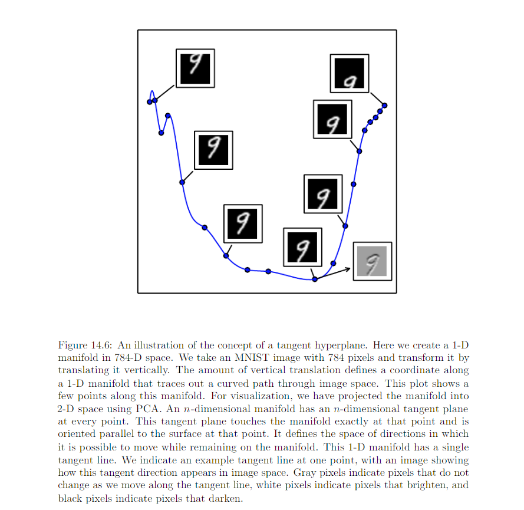
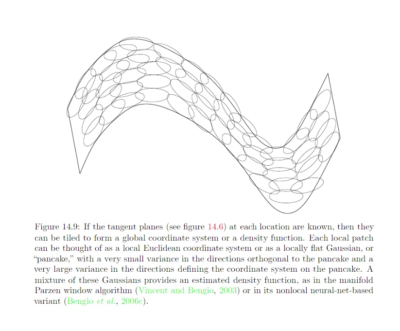

14.6 Learning Manifolds with Autoencoder¶
Tangent planes: At a point x on a d-dimensional manifold, the tangent plane is given by d basis vectors that span the local directions of variation allowed on the manifold.
Two forces of autoencoder training procedure:
Learning a representation h of training examples x. Autoencoder need not successfully reconstruct inputs that are not probale under data generating distribution since x is drawn from the training data, not directly from data generating distribution.
Satisfying the constraint or regularization penalty such as below which perfer solutions that are less sensitive to the input.
- Architectural constraint
- regularization term
The two forces together are useful because they force the hidden representation to capture information about the structure of the data-generating distribution. Autoencoder can afford to repersent only the variation that are needed to reconstruct training examples. Encoder learns a mapping from the input space x to a repersentation space, a mapping that is only sensitive to changes along the manifold directions, but that is insensitive to changes orthorgnal to the manifold.

How to characterize a manifold: A repersentation of the data points on (or near) the manifold. Such a repersentation for a perticular exmaple is also called “embedding”. It is typically given by a low-D vector, with fewer D than the ambient space of which the manifold is a low-D subset.
Nearest Neighbor Graph:

A global coordinate system can then be obtained through an optimization or by solving a linear system
Foundamental problem with such local nonparametric approach: if the manifold is not very smooth, one may need a very large number of training examples to cover each one of these varitions, with no chance to generalize to unseen variations. This motivates the use of distributed represenations and deep learning for capturing manifold structure.